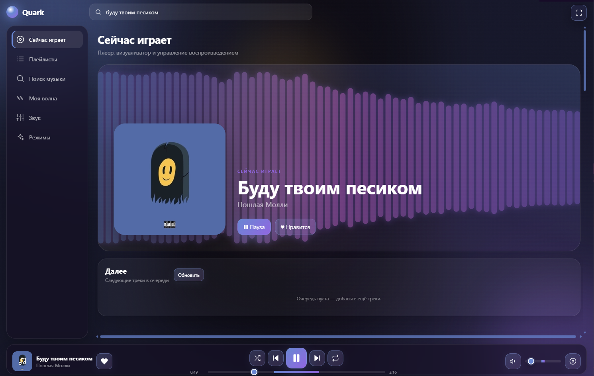

Liquid Glass
Прозрачные панели, мягкий blur и динамический акцент, который подстраивается под обложку трека.
Quark — минималистичный музыкальный плеер с Liquid Glass интерфейсом, умными плейлистами и звуком, который хочется оставить включённым.

Quark создан вокруг самого важного — твоей музыки. Никаких перегруженных интерфейсов, бесконечных рекомендаций и визуального шума.
Прозрачные панели, мягкий blur и динамический акцент, который подстраивается под обложку трека.
Создавай коллекции, добавляй треки и храни всё локально.
Тонкая настройка звучания плюс готовые пресеты.
Музыка становится частью интерфейса — не отвлекая от неё.
Добавь пространству глубины одним движением.
Непредсказуемые паузы для атмосферы знакомого мира.
Персональная музыкальная волна на основе твоей коллекции. Рекомендует треки только из выбранного плейлиста.
Quark для Windows. Бесплатно и без лишнего.